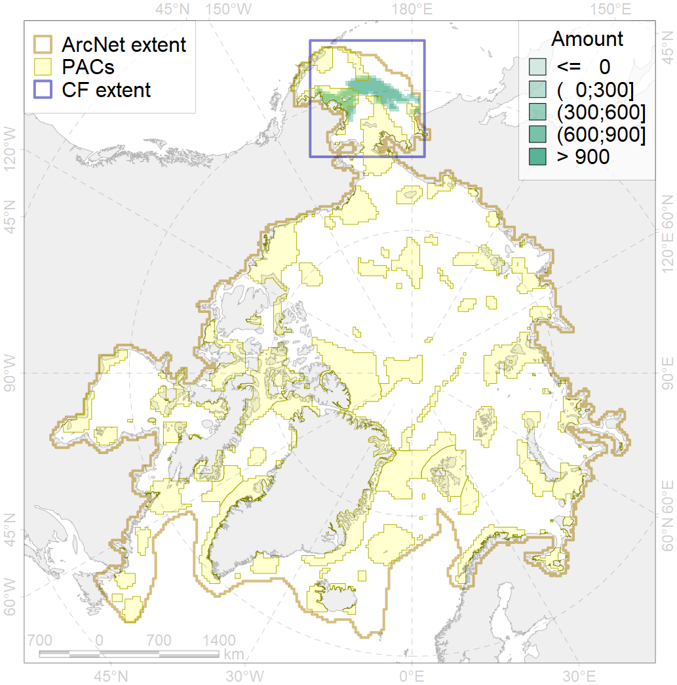
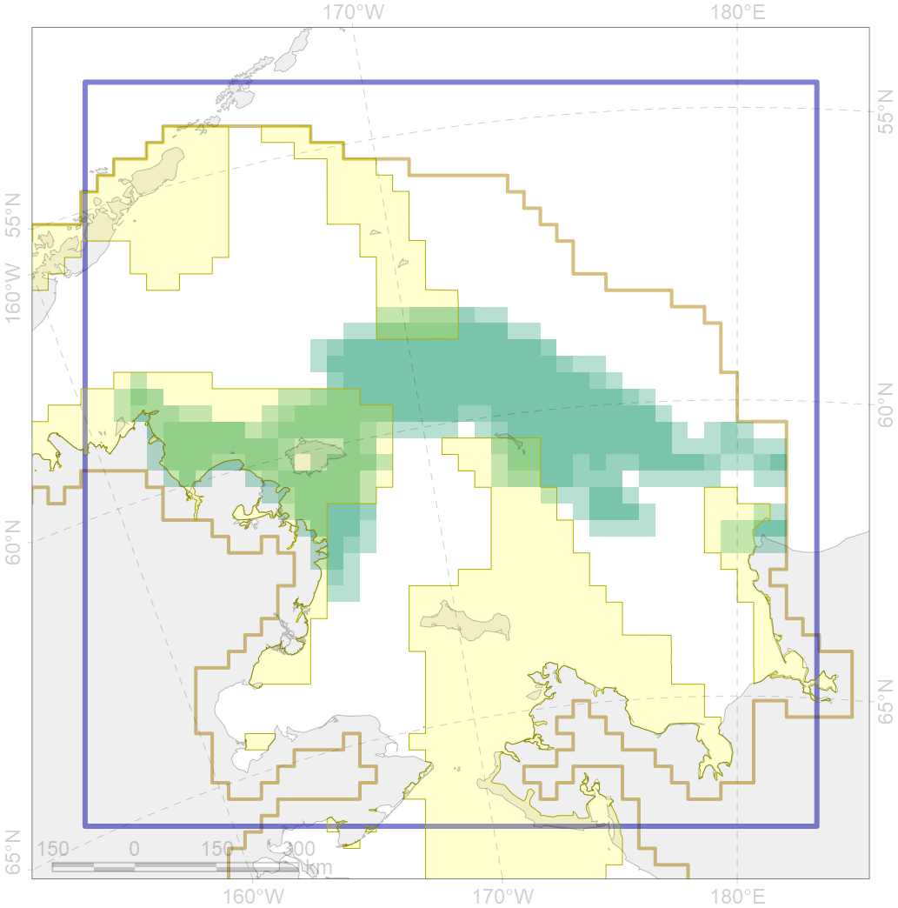

2060

| CF code | 2060 |
| CF name | Ribbon seal whelping areas as predicted by MIZ distribution |
| Time Period | 1979-2017 |
| Source(s) | Trukhanova; Platonov (MIZ data); Chernook et al 2018 |
| Seasonality | March-June |
| Depth Horizon | 0-100m |
| Methodology | Extert input; surrogate data; data compilation |
| Use Restrictions | Surrogate data provided by Nikita Platonov and available for PANPAN project participants |
| Author Name | Irina Trukhanova |
| Notes | |
| Scenario’s Target | 0.12 |
| Target Achievement | 0.351 (Scenario: 292.1%) |
| PAC | Share of the Total Amount within the PAC | Share of the Target Achievement for the ArcNet | PAC’s Contribution to the Target Achievement |
|---|---|---|---|
| 2 | 3.0%3.9% | 12.1%13.3% | 4.1%4.6% |
| 3 | 26.6%27.6% | 214.8%223.1% | 73.5%76.4% |
| 4 | 0.5%0.9% | 3.9%7.5% | 1.3%2.6% |
| 5 | 2.6%2.6% | 21.0%21.0% | 7.2%7.2% |
| inner | 32.7%35.0% | 251.8%264.9% | 86.2%90.7% |
| outer | 67.3%74.8% | 40.3%90.7% | 13.8%31.1% |
| † supplement values are for area consistence whereas principal values are for Accenter compatible gridded stats |